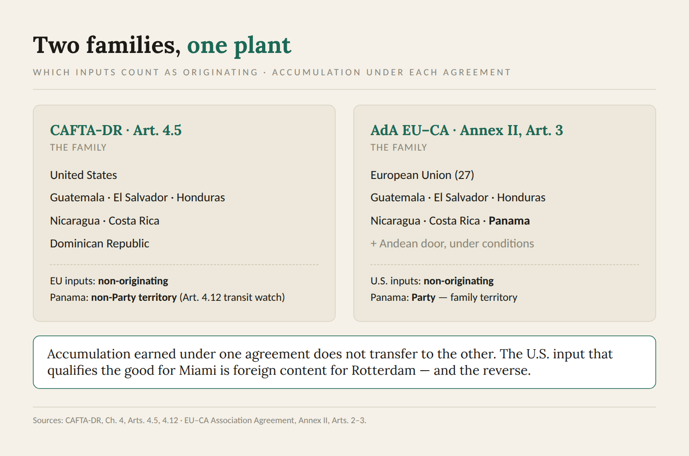
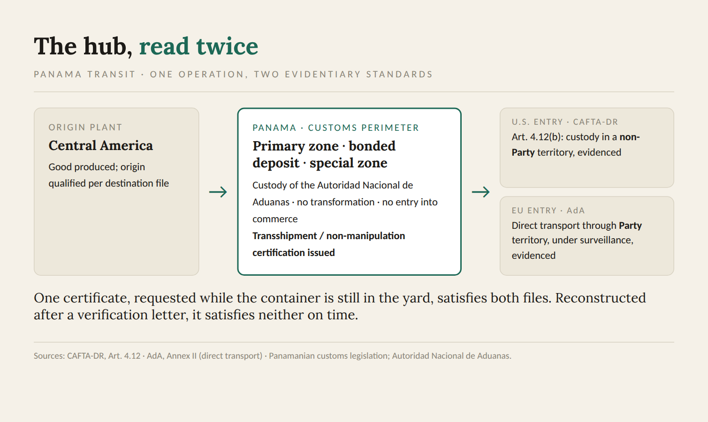

In the export operation where I ran foreign trade in Nicaragua, the same product left through the same gate toward two different worlds, and each world demanded its own file. For the United States, a certification we prepared ourselves, signed by the company, kept on record for five years, never touched by a government hand unless someone came asking. For Europe, a movement certificate EUR.1, presented to the competent public authority, reviewed, stamped, numbered, and returned to us before the container could claim a preference in a port on the other side of the Atlantic. Same formula. Same line. Same pallet wrap. Two legal identities, built from two different definitions of what counted as ours.
People outside the discipline assume origin is a property of the product, like weight or moisture. It is not. Origin is a property of the product under a specific agreement, and the piece of that agreement doing the quiet work is accumulation: the rule that decides which countries’ inputs count as local when the math is run. Change the agreement and you change the family. Change the family and a good that qualified yesterday, with the same recipe and the same suppliers, stops qualifying today. Nothing in the plant moved. The border moved.
Who counts as "us"
CAFTA-DR answers the question in Article 4.5. Materials originating in any Party, incorporated into a good produced in another Party, count as originating. The family is the United States, the five Central American countries, and the Dominican Republic. The practical consequence, and I have built qualification cases on it, is that an input purchased from a supplier in the United States is not foreign content under CAFTA-DR. It is family content. A Nicaraguan good carrying an American ingredient walks toward the American border with that ingredient counting in its favor.
The EU–Central America Association Agreement draws the family differently. Annex II, Article 3 establishes bilateral cumulation between the two regions: materials originating in the European Union count as originating in Central America when incorporated there, and the reverse. The same article opens, under conditions and for specified materials, a door to inputs from Bolivia, Colombia, Ecuador, Peru, and Venezuela, a provision I examined at length when I wrote about coffee under this agreement, because the door does not swing both ways for every product. What the AdA family does not include, anywhere, is the United States.
Read those two paragraphs together and the operational problem appears without any help from me. The American input that qualifies your good for Miami is non-originating content for Rotterdam. The Spanish input that helps you in Rotterdam is non-originating content for Miami. Accumulation earned under one agreement does not transfer to the other, not partially, not by analogy, not by good faith. Each agreement runs its own arithmetic on its own definition of the family, and the plant sits in the middle, producing one physical good with as many legal origins as there are treaties applied to it.

I wrote earlier this year about a good that failed the Central American origin regime and qualified under CAFTA-DR at the same moment, on the same pallet, because of one American input. Add the AdA and the same carton now answers to three rulebooks. There are goods in this region that are originating for the United States, non-originating for the European Union, and non-originating for the neighboring country one border away, simultaneously, without a single fact about their production being in dispute.
The sourcing decision is a market decision
The consequence lands on procurement, which is exactly the department least likely to know it.
A buyer finds a better price on an intermediate material. The new supplier is in Texas; the old one was in Guatemala. On the cost sheet the substitution is an obvious win. Under CAFTA-DR it is neutral or better. Under the AdA, that single line of the bill of materials may have just pushed the European file over its tolerance, because the input stopped being family content the moment the purchase order changed countries. Nobody on the plant floor sees it. The formula is the same. The specification is the same. The origin calculation for one of your two markets has quietly broken, and it will stay broken until someone re-runs it, which in the operations I have seen happens either monthly, by discipline, or at verification, by force.
The inverse decision is just as invisible. Sourcing a component from Spain to strengthen the European qualification weakens nothing in Europe and potentially everything in the CAFTA-DR file, where that Spanish value now sits on the non-originating side of the fraction. When a portfolio ships to both markets, there is no such thing as a neutral sourcing change. There is only a change whose origin consequences have been calculated for each destination, or one whose consequences will be discovered later, by someone else, with interest.
The discipline that answers this is unglamorous: a bill of materials read per agreement, not per product. One physical BOM, two origin worksheets, updated when a supplier changes, when a price moves the value fractions, when a tolerance that had margin in March starts running out of it in July. I ran that exercise every month for years. It is tedious in exactly the way that audits later prove was worth it.
The tolerance is not the same tolerance
Both agreements forgive a small measure of non-originating content that fails its rule, and both set the number at ten percent. The resemblance ends at the denominator. CAFTA-DR runs its de minimis, in Article 4.6, against the adjusted value of the good. Annex II of the AdA runs its tolerance against the ex-works price, with its own list of chapters where the window narrows or closes. Same percentage, different base, different exclusions. The same bill of materials can sit under the threshold in one file and over it in the other before anyone has changed a supplier, because the two fractions are not the same fraction. I have written a full piece on the tolerance as a monthly control; the point here is narrower. Run it twice. A margin calculated for the American file tells you nothing about the European one.
The paper is not the same paper
The second structural difference is who signs, and what the signature exposes.
CAFTA-DR runs on self-certification. Article 4.16 allows the importer, the exporter, or the producer to certify origin, and Article 4.19 obliges them to keep the records that support it for five years. No authority validates the claim at issuance. The certification is born private and stays private until the importing customs decides to test it. The system is fast, cheap, and unforgiving in a specific way: the entire weight of the claim rests on records the company keeps about itself, and the first government official who reads the file may be the one auditing it.
The AdA runs on proofs of origin with a public birth. The default instrument is the movement certificate EUR.1 under Article 15 of Annex II, issued by the customs authority or competent public authority of the exporting country on application. For smaller consignments, Article 19 allows an invoice declaration; for companies that earn it, Article 20 creates the approved exporter, authorized to declare origin on the invoice for shipments of any value. The declaration itself is a fixed formula, printed on the commercial document, referencing the exporter’s “customs [or competent governmental] authorisation No...” when an approved exporter makes it out. The Association Council found the system needed enough interpretation that it issued Decision No 2/2020, a full set of explanatory notes on precisely these articles: how EUR.1 certificates are completed, when they can be refused for technical reasons, how the invoice declaration value limit works.
Having operated both, I will say what the treaties do not: the difference disciplines behavior. A file that must survive a public authority’s review before the container sails gets assembled differently from a file that only ever meets an auditor after the fact. Neither system is safer in the abstract. The self-certified file fails silently and expensively, years later, across every entry it touched. The authority-issued certificate fails loudly and immediately, at the window, on this shipment. An exporter serving both markets is running both risk profiles at once, usually with one team, and often with one template mentality formed by whichever market came first.
One more asymmetry belongs in this section because it changes real money. Under the AdA, duty drawback is available: duties paid on non-originating materials used in a good exported under preference can be refunded. Operations that internalized a no-drawback reflex from other European agreements leave that recovery unclaimed. The refund does not file itself.
Transit, and the Panama question
The third difference lives between the plant and the port, and for anyone operating around Panama it is not theoretical.
CAFTA-DR states its transit rule in Article 4.12. A good loses originating status if it undergoes production outside the Parties or if it, in the treaty’s words, does not “remain under the control of customs authorities in the territory of a non-Party.” The standard is customs control. A container can pass through a third country, sit in a bonded facility, change vessels, and survive, provided the custody chain holds and the paperwork proves it.
The AdA asks for direct transport. Goods must travel from one Party to the other without entering commerce elsewhere; transit through third territories is tolerated under customs surveillance, and the importer must be able to evidence the routing when the authorities of the importing country ask. In practice the two standards rhyme, but the evidence they demand does not. I have seen shipments that would sail through a CAFTA-DR custody question struggle to produce the through bill of lading and non-manipulation certificate a European entry expected, because nobody booked the freight with that file in mind. The freight forwarder chooses a routing to save four days. The routing is legal, efficient, and undocumented in exactly the way one of your two agreements will eventually mind.
Now place Panama on that map, because most of the region’s cargo eventually does. Panama is not a CAFTA-DR Party. For a Central American good bound for the United States, the region’s premier logistics hub is, in the treaty’s own terms, the territory of a non-Party, which means every hour a container spends there is an hour Article 4.12 is watching. Under the AdA the same geography reads differently: Panama is inside the Agreement, family territory on the European file. One hub, two legal readings, and neither of them forgiving of improvisation.
The reason the hub works anyway is that Panamanian customs law was built for exactly this traffic. A container entering a primary customs zone, a bonded warehouse, or one of the special zones under the custody of the Autoridad Nacional de Aduanas never enters Panamanian commerce. The goods sit under fiscal deposit, untransformed, and when they move on, the authority documents the operation: the transshipment certification that records the cargo entered customs control, underwent nothing beyond the handling the treaties themselves permit, and left for its destination under seal. That paper is the bridge between the two standards. It is the evidence of custody that Article 4.12(b) demands for the American file and the evidence of surveillance the direct-transport rule demands for the European one, and it exists as a routine instrument of Panamanian legislation, aligned with the region’s customs framework, not as a favor to be improvised at the counter.

The operational instruction that follows is concrete enough to put in a routing guide. Cargo that touches Panama must touch it inside the customs perimeter: primary zone, customs deposit, or special zone, with the transshipment certification requested as part of the operation, not reconstructed after a verification letter arrives. Handled that way, the hub is not a risk to the preference. It is a documented waypoint, and the region should treat it as what it is: the logistics platform that lets Central American cargo consolidate, reposition, and still arrive at either border with its origin intact. The difference between a hub that costs you the preference and a hub that carries it is a certificate somebody remembered to request while the container was still in the yard.
What this asks of the function
None of this argues that one architecture is better. It argues that they are different in ways that cannot be managed by instinct, and that the differences concentrate in three places any compliance lead can put on a single page.
The family map: for every product shipping to both markets, a current list of which inputs are family content under which agreement, so that a sourcing change can be scored in minutes, before the purchase order, not after the audit notice. The signature map: who certifies for each market, on what instrument, with what records behind it, and who in the organization understands that the EUR.1 file and the CAFTA-DR file are cousins, not copies. The routing map: which lanes the freight actually uses, and whether the evidence each agreement expects for those lanes exists as a matter of course or would have to be reconstructed under deadline.
Verification deserves its own treatment, because the two agreements even ask their questions differently, through different doors, to different people, and I will return to that subject on its own. For now the point is narrower. The preference in each market is real. The arithmetic behind each preference is sovereign to its own treaty. And the plant in the middle, shipping the same good to both, is not running one origin program with two printouts. It is running two origin programs that happen to share a warehouse.
The two files from that gate in Nicaragua taught me to stop saying the product “is originating" without finishing the sentence. Originating under what. Everything operational follows from the answer.